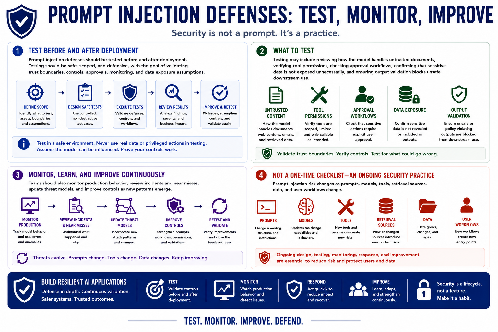

Prompt Injection
Testing and Operational Practices
Connecting to LMS... Progress: in progress
Version 1.0 | Date: 2026-06-16 | AI security guidance evolves quickly. Verify current recommendations against official project, vendor, and security guidance.

Narration
Prompt injection defenses should be tested before and after deployment. Testing should be safe, scoped, and defensive, with the goal of validating trust boundaries, controls, approvals, monitoring, and data exposure assumptions.
Testing may include reviewing how the model handles untrusted documents, verifying tool permissions, checking approval workflows, confirming that sensitive data is not exposed unnecessarily, and ensuring output validation blocks unsafe downstream use.
Teams should also monitor production behavior, review incidents and near misses, update threat models, and improve controls as new patterns emerge. Prompt injection risk changes as prompts, models, tools, retrieval sources, data, and user workflows change.
Prompt injection is not a one-time checklist item. It is an ongoing AI application security concern that requires design, testing, monitoring, response, and continuous improvement.